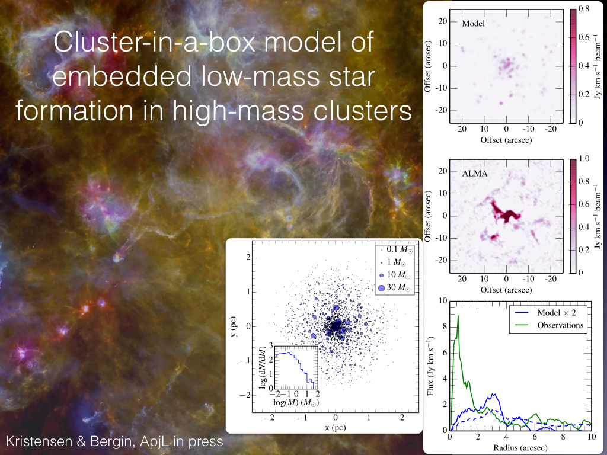
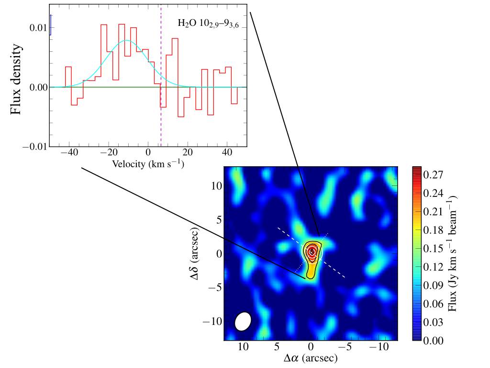
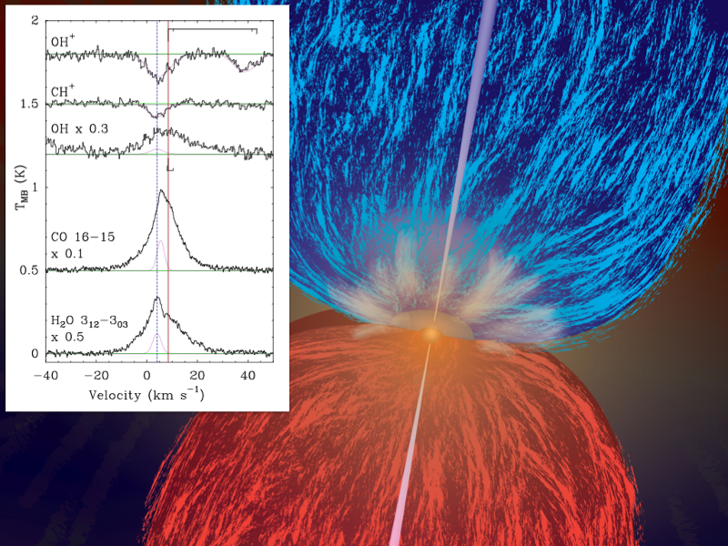
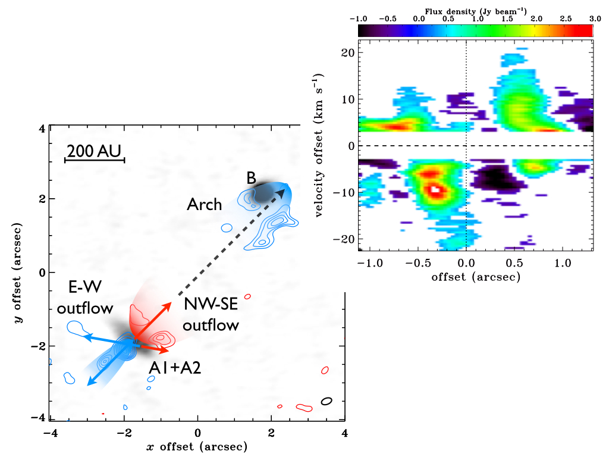
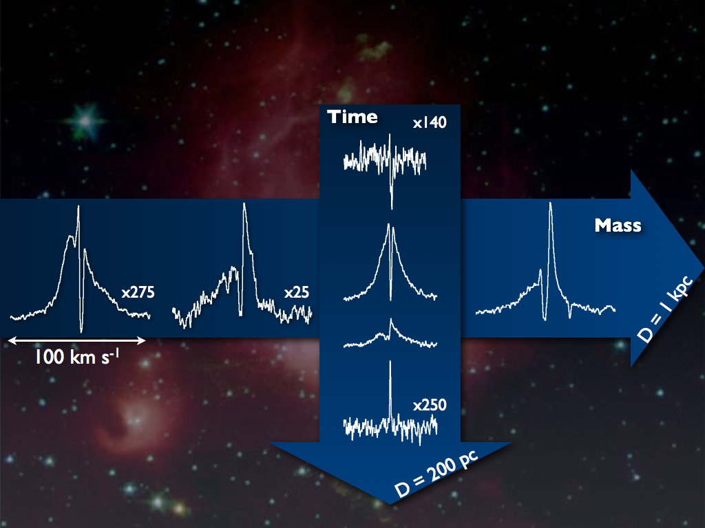

{kind=link}
{kind=link}
{kind=link}
{kind=link}
{kind=link}
 View Lars E. Kristensen's profile
View Lars E. Kristensen's profile
Lars E. Kristensen © 2013
How do stars form? How can understanding the chemistry of star-forming environments help us to answer this question? Astrochemistry is the interdisciplinary science that straddles astronomy and chemistry, asking which molecules can we find in space, where can we find them, and how did they get there? Such molecules tell us about how stars like our Sun, planets and life form; they are the ingredients of the world around us, they influence and reflect the physical conditions in star-forming regions everywhere in the Universe. As an astrochemist, I want to constrain the chemistry in such regions, which can only be achieved by comparing observations and models.
As stars form, they launch powerful bipolar jets which plunge into the surrounding medium, injecting both energy (heat) and momentum (turbulence). Astrochemistry serves as a valuable tool for understanding the shocks and physical processes associated with this energy injection, which further aids in constraining the energetics of outflows on scales ranging from the size of the disk (100 AU) to parsec scales.
 A star, such as our own Sun, predominantly forms in clusters along with thousands of other stars, including high-mass stars. Yet little is currently known about how the earliest stages of star formation, in particular low-mass star formation, takes place because it is incredibly difficult to directly observe these stars. Even the nearest embedded clusters are typically at distances greater than 1 kpc and so both resolution and sensitivity become issues for detecting the low-mass population of stars. This is even more of a problem when looking at clusters in galaxies, both nearby galaxies and higher redshift sub-mm galaxies.
One possibility is to use outflows as a tracer of the embedded population: outflows are only active during the embedded stage, and outflow emission scales linearly with protostellar mass (at least in the low-mass case). Thus, any detected outflow signatures will directly constrain the properties of the otherwise hidden low-mass population. To quantify this contribution, I constructed a cluster model which is available on GitHub and about to be published (Kristensen & Bergin, ApJL, in press). Initial results suggest that as much as 50% of the outflow emission may be coming from the low-mass population toward one embedded high-mass cluster.
 Water is an essential ingredient for life on Earth, and it is of prime importance to know where the water is in forming protostars and planet-forming disks. Recent observations with both the Spitzer Space Telescope and the Herschel Space Observatory reveal a vast reservoir of hot water with temperatures exceeding 500 K in the inner few AU of protostellar disks. However, recent observations with the SubMillimeter Array (SMA) shed doubt on this interpretation.
Observations of a single highly excited water line at very high spectral resolution (better than 1 km/s resolution), reveal that the moving water is not found in the inner disk; instead it is found in winds and outflows launched by the accreting protostar. Less than 10% of the water emission is coming from the inner disk, which puts stringent limits on the amount of water vapour in the inner disk (Kristensen et al. in prep.).
 The wind from young protostars drives shocks into the inner, in-falling envelope of low-mass protostars. Observations with the Heterodyne Instrument for the Far-Infrared (HIFI) onboard the Herschel Space Observatory reveal the existence of these shocks through velocity-resolved spectra of water and other chemical species. In particular, observations of light hydrides rarely found on Earth, such as OH, CH+ and OH+, show a distinct velocity signature which I interpret as arising in strong dissociative shocks.
The observations and my analysis shed light on both the chemistry of strong dissociative shocks, and the inner workings of accreting protostars, as evidenced by their ejection of material. I am currently following up the HIFI observations with higher-angular-resolution studies done with the SMA (Kristensen et al. 2013b).
 ALMA, the Atacama Large Millimeter/submillimeter Array in the Atacama Dessert in Chile, is delivering stunning high-angular-resolution observations of low-mass protostars. I analyzed Science Verification data of a highly excited CO line, J = 6-5 at 691 GHz, toward a deeply embedded low-mass protostar, and we show that one of the sources in this system has no outflow activity associated with it, in spite of infall being detected toward the source. Furthermore, we show that hot outflowing material quickly decelerates in the inner 100 AU from the protostar. These observations highlight what ALMA can and will be able to do very soon (Kristensen et al. 2013a).
 Over the past several years I have been working in a Herschel Guaranteed Time key program, Water In Star-forming regions with Herschel, WISH. The program is all about quantifying the "water trail" from prestellar cores, through the embedded phase of star formation, to planet-forming disks, as well as from low-mass protostellar cores to high-mass cores. My primary work has been centered on the water evolution from the so-called Class 0 to Class I stages, the stages where most of the accretion takes place and where powerful outflows work as signposts for active star formation (Kristensen et al. 2012, Kristensen et al. 2010).